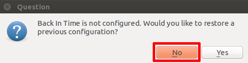
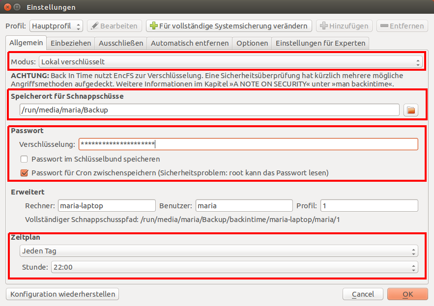
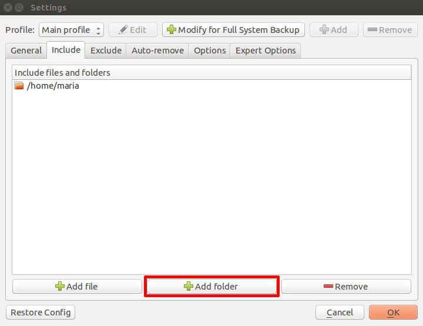

Back In Time ist eine Backup Software für Linux, basierend auf rsync. Ihr grösster Vorteil gegenüber dem vorinstallierten Déjà Dup ist, dass Snapshots erstellt werden können. Ein Snapshot erlaubt es dir, den Stand eines Ordners zu einem bestimmten Datum wiederherzustellen.
Da Back In Time einige Vorteile bietet, empfehlen wir Back In Time.
Installation
-
Benötigte Abhängigkeiten installieren
Bevor du loslegen kannst, musst du das Paketbackintime-gnomeinstallieren. Jetzt installieren
Konfiguration
- Beim ersten Starten von Back In Time erscheint ein Konfigurations-Dialog, bei welchem du eine bereits existierende Konfiguration wiederherstellen kanst. Da dies wahrscheinlich nicht der Fall ist, kannst du den Dialog mit "Nein/No" schliessen. Es erscheint ein weiterer Dialog in dem du alle wichtigen Parameter einstellen kannst. 
Im Reiter "Allgemein/General" spezifizierst du den Speicherort, wo du dein Backup erstellen möchtest. Hier wählst du am besten einen Ordner auf einer externen Festplatte aus. Zusätzlich kann hier festgelegt werden, wann das Backup normalerweise durchgeführt werden soll. Es wird empfohlen das Backup zu verschlüsseln und mit einem starken Passwort zu schützen. Dazu wählst du den Modus "Lokal verschlüsselt". 
Im Reiter "Hinzufügen/Include" kannst du alle Ordner auswählen die du gerne sichern möchtest. Gleiches gilt für einzelne Ordner, die du gerne aus dem Backup exkludieren möchtest. 
Mit "OK" kann der Dialog quittiert werden. Dein Backup ist eingerichtet und funktionsbereit.
{kind=link}
{kind=link}
{kind=link}
Sichern
Es gibt zwei Varianten, wie eine Sicherung durchgeführt werden kann:
- Manuell über die Schaltfläche "Snapshot erstellen"
- Automatisch zu einer bestimmten Zeit mittels konfiguriertem Cron Job. Die automatische Variante hast du bei der Konfiguration festgelegt.
{kind=link}
Wiederherstellen
Spätestens jetzt bist du froh ein Backup eingerichtet zu haben 
Das Wiederherstellen verlorener oder veränderter Datein geht zum Glück einfach von der Hand.
- Snapshot in der Zeitleiste auswählen
- Über die Schaltfläche "Wiederherstellen" wird die Datei in das ursprüngliche Verzeichnis kopiert.
- Vorhandene Dateien erhalten einen neuen Dateinamen "Originaldateiname.backup.datum", um zu vermeiden, dass eine bestehende Datei überschrieben wird.
{kind=link}